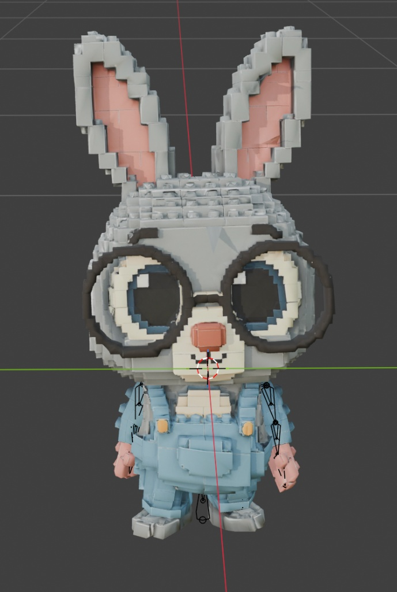
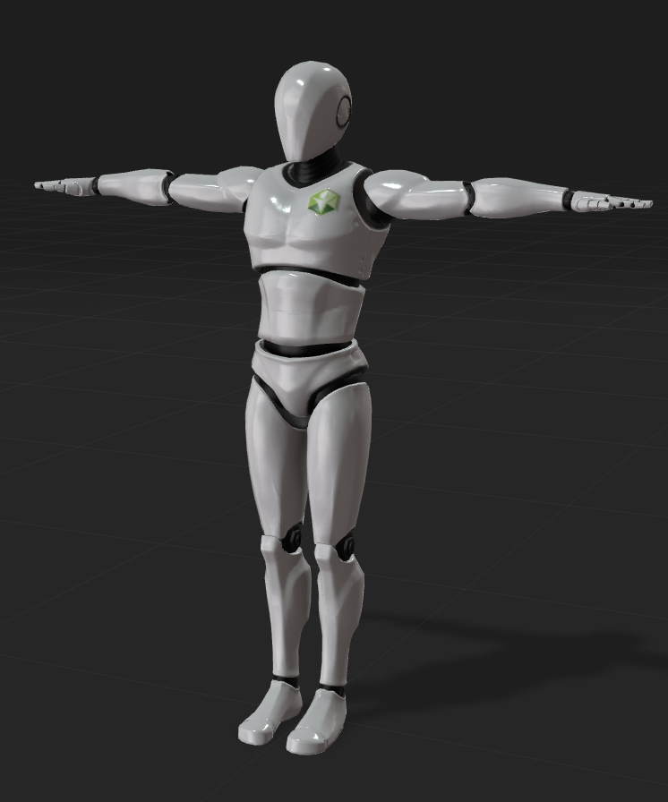
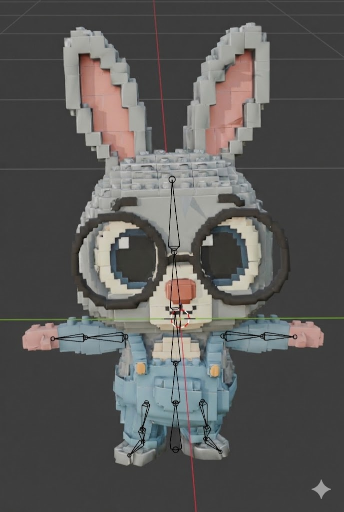

整体逻辑
不要把素材提前分成 characters 和 poses。你的测试会交叉使用同一批素材，所以 `datasets/assets/` 只保存素材本身；具体某次实验里谁是图 1、谁是图 2，由 `case.yaml` 决定。
三图示例如何落盘
图 1 和图 2 都来自 `datasets/assets/` 的某个 render。图 3 是一次 run 返回的 candidate。

datasets/assets/bunny_voxel_001/renders/neutral/front.png

datasets/assets/robot_001/renders/tpose/front.png

experiments/.../runs/r001/outputs/cand_01.png
推荐目录结构
image-retarget/
docs/
pose-retarget-structure.html
experiment-settings.md
experiment-results.html
datasets/
assets/
y_bot/
source/
Y Bot.fbx
blender/
Y-bot.blend
renders/
Y-bot-Apose-front.png
asset.yaml
experiments/
2026-06-05_bunny-voxel-001__pose-from-y-bot__apose-front/
case.yaml
runs/
r001/
outputs/
cand_01.png
cand_02.png
r002/
outputs/
cand_01.png
records/
codex-2026-06-05-notes.md
datasets/assets：统一素材库
一个 asset 可以是下载的 FBX，也可以是普通参考图片。它不固定属于“角色”或“姿态”；这些角色由 experiment 决定。
asset 目录
datasets/assets/y_bot/
source/
Y Bot.fbx
blender/
Y-bot.blend
renders/
Y-bot-Apose-front.png
asset.yaml
asset.yaml
id: y_bot name: Y Bot asset_type: fbx source_asset: local_file: source/Y Bot.fbx original_filename: Y Bot.fbx blender: scene: blender/Y-bot.blend render_settings: null renders: apose_front: renders/Y-bot-Apose-front.png notes: - Source asset and one A-pose front render are available.
renders：真正的 image 输入
网页模型吃的是图片，不是 FBX。FBX 的作用是让你可以在 Blender 中稳定生成不同姿态和视角的输入图。
datasets/assets/y_bot/renders/ Y-bot-Apose-front.png datasets/assets/Body-Block/renders/ body-block-pose1.png
case.yaml：决定素材角色
同一个 asset 可以在不同 case 中交叉使用。case 只记录引用路径，不复制输入图。
case_id: 2026-06-04_bunny-voxel-001__pose-from-y-bot-001__tpose-front task: pose_retarget character_input: asset_id: bunny_voxel_001 render: datasets/assets/bunny_voxel_001/renders/neutral/front.png pose_reference: asset_id: y_bot render: datasets/assets/y_bot/renders/Y-bot-Apose-front.png output_view_policy: out-front notes: prompt asks image 1 character to perform image 2 pose.
run：一次网页提交
一次网页提交就是一个 run。输入 image 不复制到 run 里，而是在 case.yaml 引用 datasets/assets 的 render 路径；run 目录只保存该模型提交返回的原始输出图。
experiments/<case_id>/
case.yaml
runs/
r001/
outputs/
cand_01.png
cand_02.png
r002/
outputs/
cand_01.png
prompt
prompt 不再分散写到每个 run 目录下。相同输入图和 prompt 的模型对比，集中写到 docs/experiment-results.html 里。
Keep the character identity, appearance, material, colors, proportions, outfit, and accessories from image 1. Transfer only the body pose from image 2 to the character in image 1. Output one full-body image. Do not replace the image 1 character with the image 2 character.
网页总览：候选图评价
一次网页提交可能返回多张候选图。不要复制 selected 图；在 docs/experiment-results.html 中横向查看、备注和分析。
| candidate | pose match | identity keep | style keep | artifacts | selected | notes | |---|---:|---:|---:|---:|---|---| | cand_01 | 3 | 5 | 4 | 2 | no | pose not horizontal enough | | cand_02 | 5 | 4 | 4 | 2 | yes | best balance |
实验记录表
结构规则在 docs/experiment-settings.md；可视化结果记录在 docs/experiment-results.html。experiments/ 保存原始输出，records/ 只放过程日志。
| 表 | 记录什么 | 对应目录 |
|---|---|---|
| Asset 素材登记 | FBX、Blender、renders、asset.yaml | datasets/assets/<asset_id>/ |
| Render 索引 | 每张截图的 pose_state、view、用途 | datasets/assets/.../renders/ |
| Case 结果总表 | character_input、pose_reference、run 和 selected_candidate | experiments/<case_id>/case.yaml |
| Run 输出分组 | 不同模型提交的原始输出图 | experiments/<case_id>/runs/r001/outputs/ |
| 结果网页 | prompt、输入图、输出图、备注和分析 | docs/experiment-results.html |